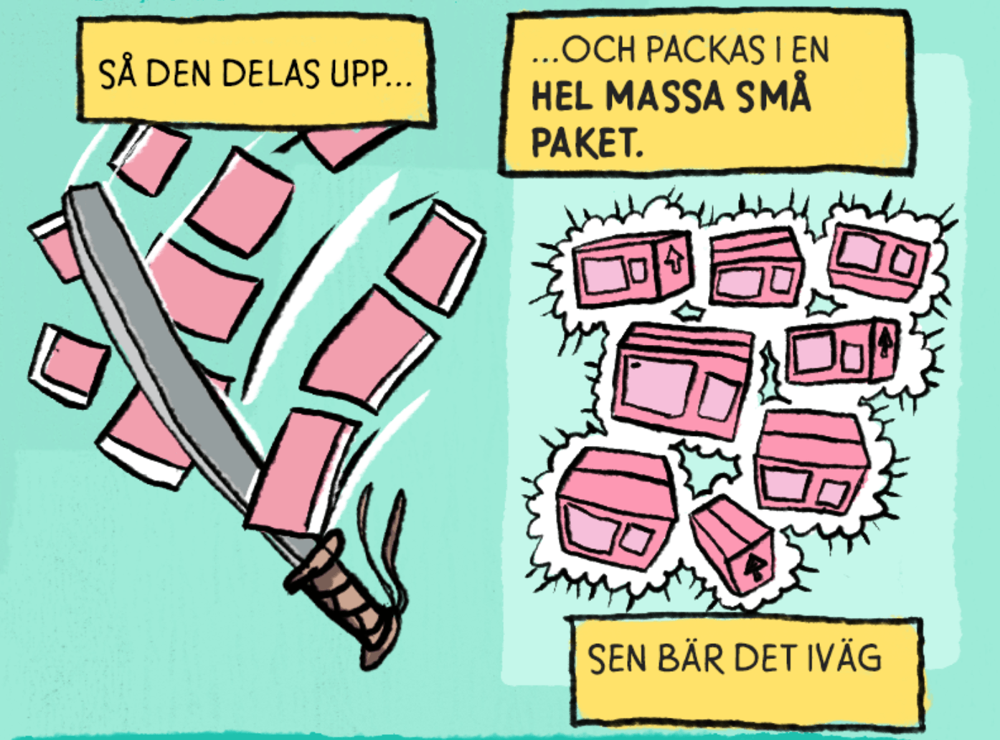

Tekniken bakom internet heter TCP/IP – men det finns en utmanare
Så hur fungerar internet? Svaret är en teknik som kunde börja användas redan 1974. Men det har inte varit givet att just TCP/IP, som tekniken heter, skulle bygga internet. Mäktiga motståndare har tyckt annat.
Den 5 maj 1974 presenteras en ny teknik av amerikanerna Vint Cerf och Robert Kahn, som båda arbetar med Arpanet (föregångaren till det vi i dag kallar internet).
Protokollen TCP och IP gör det möjligt att snabbt skicka paket med information mellan anslutna datorer och nätverk. Allting decentraliserat. Systemet bygger på att nätverken inte kontrollerar informationen som skickas och är avgörande för framgången med internet. Det fungerar lite som posten, de struntar i vad du skickar och hur, bara paketet kommer fram.
Och inte nog med det: paketen delas upp och skickas i bitar, för att sedan sättas ihop när de via olika vägar nått fram till målet. Eftersom det fortfarande är TCP/IP som bygger kommunikationen via internet anser många att det är Vint Cerf och Robert Kahn som ligger bäst till för att kallas ”internets skapare”. Här kan du höra dem berätta med egna ord hur det gick till.

Det smarta är att de uppdelade paketen sedan kan ta olika vägar för att sedan mötas på samma ställe.
Här kan du höra dem berätta med egna ord hur det gick till
Utmanaren X.25 lanseras
Men segern är inte given. 1976 lanseras ett annat system: X.25. Det är, till skillnad från TCP/IP, centraliserat. Det är också televerkens favorit, även det svenska. Länge tror man att det är med den tekniken informationsutbytet mellan datorer ska utvecklas.
En anledning är att systemet ger televerken möjlighet att ta betalt för trafiken. En annan är att X.25-nätverk är väldigt säkra, eftersom varje länk i kedjan felkontrollerar innehållet innan det skickas vidare. På så sätt kan man garantera att informationen är identisk från start till mål. Lite som ett brev som läses och kontrolleras av alla som nås av det under färden.

Ett X.25-modem från Siemens. (foto från Wikipedia)
Kampen tar slut
Processen har dock ett pris: det går lite väl trögt. Televerken får till sist ge sig, det mer snabba och flexibla TCP/IP tar tätpinnen redan 1 januari 1983 när amerikanska Arpanet väljer protokollet, och det är fortfarande den arkitekturen nätet bygger på.
År 1985 byter det svenska televerket namn på sin X.25-tjänst till Datapak, ett namn som fortfarande används. Tidigare har den kallats både Telepak och Databas 300. X.25-tekniken lever alltjämt, men då i sammanhang där vikten av säkerhet är särskilt stor, så som när man betalar med kreditkort eller tar ut pengar i bankomaten.